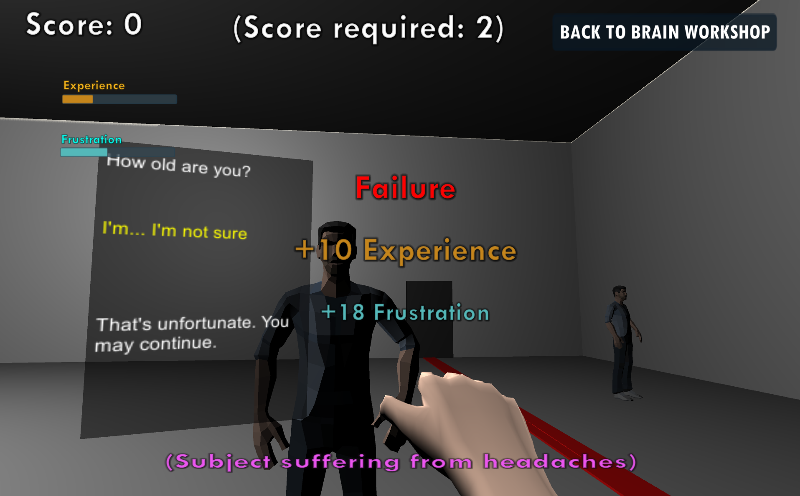

Global Game Jam 2020 - Cerebral Calibration
February 3rd, 2020
You can play Cerebral Calibration here, check out the Global Game Jam page here, and read the source code here.
This was my second Global Game Jam, and the theme for this one was Repair.
The Plot
Humanity developed a technology allowing us to calibrate brains, adjusting brain functions according to their needs. The subjects of the calibration went through several tests and challenges to test the effectiveness of the re-calibration. The procedure, while seen as brutal by some, was highly effective. Now it's your turn to lead your test subject to excellence!
The Game
The game has two different stages: The Brain Repair screen, and the tests that the Test Subject has to go through, and the various Test Stages. In order to succeed in each test, the brain of the Test Subject must be modified, or "fixed", to comply with the requirements. Thus, in order to pass each test, you must calibrate the brain to have the traits necessary for success.
Cerebral Calibration, however, is still a new process, and can have some nasty side effects that could cause headaches, frustration, and insanity. You must calibrate the test subject to comply with all regulations, crafting the right personality for each test.
After calibrating the test subject, the test runs automatically and you can observe the results and how the test subject interacts with the world, and recalibrate accordingly.
Looking Back
This was an ambitious project. I don't usually work on these kinds of games, so it was a fun new experience, and the narrative really tied it all together. The only thing I regret is that we didn't have an artist, as that would have made the game look and feel so much better.
